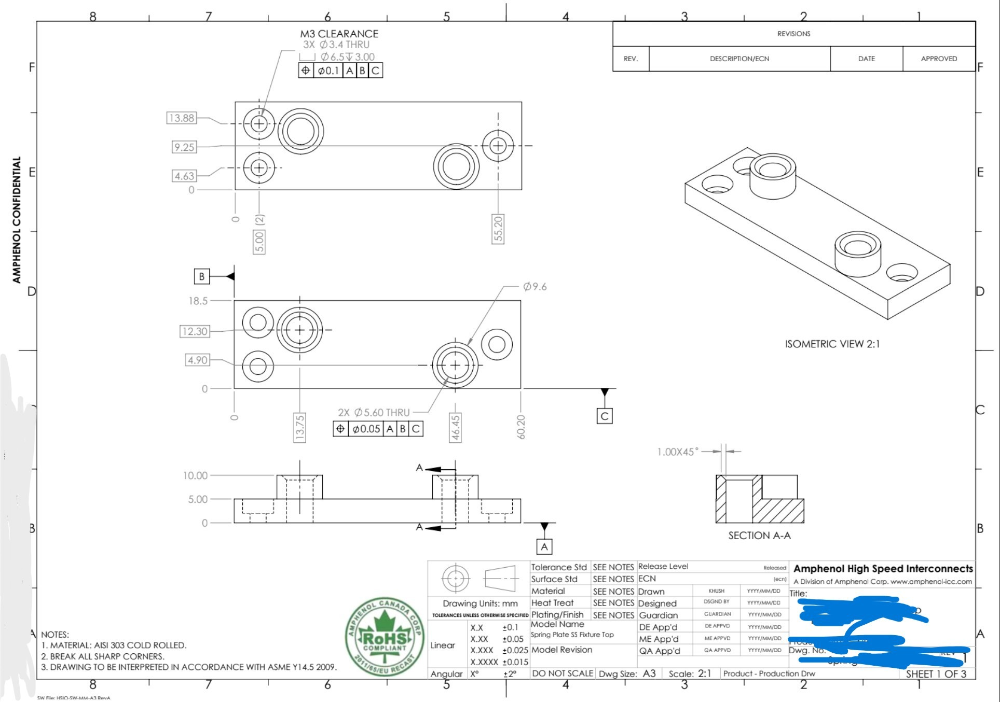
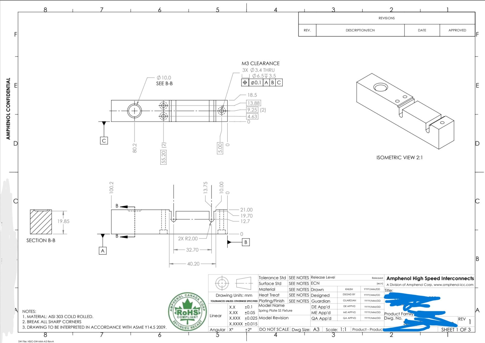
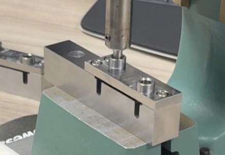
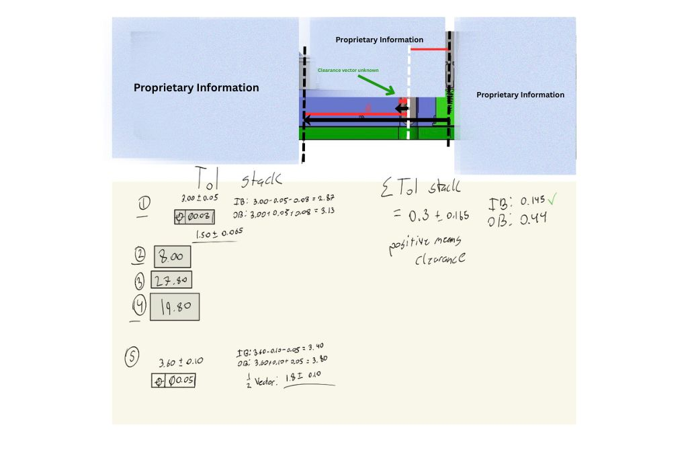

IMPORTANT! I am not allowed to discuss the majority of my work at this internship due to confidentiality agreements. The mechanism designs, simulation results, and product-specific details are proprietary. What I can share are some simple test fixtures I helped design and fabricate, which demonstrate basic GD&T and drawing practices. Understand this is not nearly representative of the full scope of my work, which was much more complex.
What I took away from this
- Document design intent before touching CAD. Every dimension needs a functional reason.
- GD&T is how you communicate with the shop. It tells the machinist what actually matters and what you're fine with loosening up.
- RSS vs arithmetic is a deliberate choice, not a default. For a one-time prototype you want worst-case arithmetic. RSS is the right tool when qualifying tolerances across a production population.
- FEA and physical testing together. When both agree, you can trust the result.
- Spending time on the shop floor every day made me a better designer faster than anything else could have.
The Product: XtremeSPEED HSIO Connector System
The XtremeSPEED High-Speed I/O platform handles ultra-high bandwidth connectivity for hyperscale data centers, AI accelerators, and cloud infrastructure. My work was on the XtremePASS standard, a next-generation midplane bypass connector built to push signal integrity.

From Amphenol Wesbite. XtremePASS 8x8x2 system, midplane bypass connector for AI and hyperscale data center applications

From Amphenol Wesbite. HSIO connector detail, high-density differential pair routing
These connectors run at 112+ Gbps PAM4, where mechanical tolerances directly affect electrical performance. A sub-millimeter misalignment in connector housing geometry introduces impedance discontinuities, crosstalk, and insertion loss.
GD&T on Critical Features
At the signal speeds this product targets, tolerance is an engineering constraint with direct electrical consequences. I implemented detailed Geometric Dimensioning and Tolerancing on all critical features, referencing datums that reflect the functional assembly.
My callouts covered positional tolerances on hole patterns, true position for alignment features, profile tolerances on mating surfaces, and perpendicularity controls on critical alignment features. The goal was to specify exactly what variation the design can absorb, without over-constraining features that don't need it, which just drives up cost.



Fixture drawings with GD&T callouts, and the machined assembly in use
Tolerance Stack-Up for a Critical Clearance
For a new hole feature I was prototyping, I needed to verify that the clearance boundary would always be met so the prototype would assemble correctly. Since this was a one-time mechanical prototype rather than a mass-production run, I used a worst-case arithmetic stack. Worst-case is the right call here: if the single physical part assembled successfully at worst-case stack, I knew it would fit. No statistical assumptions needed.
For reference, RSS would be the right tool if I were qualifying a production tolerance scheme across a large population of parts, where the probability of all contributors hitting their worst-case simultaneously is very low. But for a prototype that has to assemble exactly once, you want to know it fits at the absolute worst combination.
I drew the loop diagram by hand, sketching the tolerance contribution vectors through the assembly chain from datum to critical feature, then summed them arithmetically to determine the clearance boundaries at worst case. This confirmed whether the hole would always clear its mating part under the tightest possible combination of tolerances.

Hand-drawn tolerance contribution vectors through the assembly chain. Arithmetic worst-case sum confirmed the clearance boundary for the hole feature in the prototype.
FEA Validation
For any mechanism involving contact forces, deflection, or structural loading, I ran ANSYS FEA static simulations to verify the design met stiffness and strength requirements before cutting a physical prototype.
Running FEA and physical testing in parallel built a feedback loop that accelerated confidence in the design. When simulation and test agreed, I knew the model was accurate enough to rely on for future iterations without always needing a physical part in hand first.
Daily Time on the Shop Floor
This part of the internship shaped how I think about mechanical design more than anything else. I was working together with the machinists, watching how my features got cut, and learning what makes a design straightforward or painful to make.
Those conversations changed how I think about tolerances. A ±0.005" callout that looks fine on a drawing might require a setup change, a specialty bit/tooling, or a slower feed rate that adds cost. I got comfortable asking "can we open this up 0.002" without affecting function?" and usually the answer was yes, which simplified the operation.
I walked every drawing through the machinists directly before releasing it, going through datum structure, critical features, and how they planned to measure them. That caught a lot of ambiguity that would have shown up as a non-conformance or a scrapped part instead. The relationship I built with the shop team gave me a practical understanding of DFM that I could not have gotten in school.
DFM and DFMEA for Mass Manufacturing
Getting a prototype to work is only half of it. The other half is making the design manufacturable at scale without the cost blowing up. I applied DFM principles throughout, which meant:
- Removing tight tolerances from non-critical features to reduce inspection burden
- Standardizing hole sizes and thread specs to cut down on tool changeovers
- Tuning wall thicknesses and radii for the target machining processes
I also used DFMEA to systematically identify potential failure modes in each mechanism, assess severity and likelihood, and implement design changes that reduced risk.
Overarching Impact
The products I worked on support some of the fastest-growing segments in global infrastructure, hyperscale AI compute, cloud data centers, and high-performance networking. Having my work feed into that pipeline, even as a contributor on a development team, is amazing!